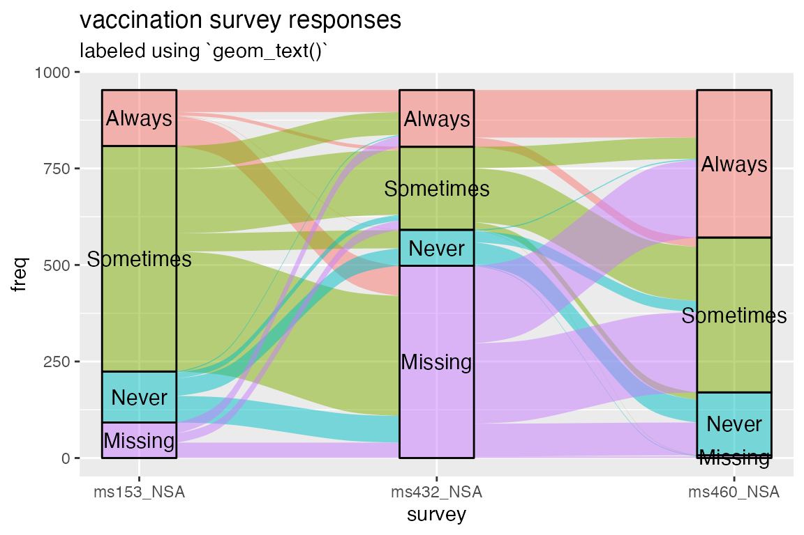

Setup
This brief vignette uses the vaccinations dataset
included in {ggalluvial}. As in the
technical introduction, the order of the levels is reversed to be
more intuitive. Objects from other {ggplot2} extensions are accessed via
:: and :::.
knitr::opts_chunk$set(fig.width = 6, fig.height = 4, fig.align = "center")
library(ggalluvial)## Loading required package: ggplot2Problem
The issue on the table: Strata are most helpful when they’re overlaid
with text labels. Yet the strata often vary in height, and the labels in
length, to such a degree that fitting the text inside the strata at a
uniform size renders them illegible. In principle, the user could treat
size as a variable aesthetic and manually fit text to
strata, but this is cumbersome, and doesn’t help anyway in cases where
large text is needed.
To illustrate the problem, check out the plot below. It’s by no means an egregious case, but it’ll do. (For a more practical example, see this question on StackOverflow, which prompted this vignette.)
ggplot(vaccinations,
aes(x = survey, stratum = response, alluvium = subject, y = freq,
fill = response, label = response)) +
scale_x_discrete(expand = c(.1, 0)) +
geom_flow(width = 1/4) +
geom_stratum(alpha = .5, width = 1/4) +
geom_text(stat = "stratum", size = 4) +
theme(legend.position = "none") +
ggtitle("vaccination survey responses", "labeled using `geom_text()`")
Fix
One option is to simply omit those labels that don’t fit within their
strata. In response to an issue,
v0.9.2 includes parameters in stat_stratum()
to exclude strata outside a specified height range; while few would use
this to omit the rectangles themselves, it can be used in tandem with
geom_text() to shirk this problem, at least when the labels
are concise:
ggplot(vaccinations,
aes(x = survey, stratum = response, alluvium = subject, y = freq,
fill = response, label = response)) +
scale_x_discrete(expand = c(.1, 0)) +
geom_flow(width = 1/4) +
geom_stratum(alpha = .5, width = 1/4) +
geom_text(stat = "stratum", size = 4, min.y = 100) +
theme(legend.position = "none") +
ggtitle(
"vaccination survey responses",
"labeled using `geom_text()` with `min.y = 100`"
)This is a useful fix for some cases. Still, if the goal is a publication-ready graphic, then it reaffirms the need for more adaptable and elegant solutions. Fortunately, two wonderful packages deliver with, shall we say, flowing colors.
Solutions
Two {ggplot2} extensions are well-suited to this problem: {ggrepel} and {ggfittext}. They provide
new geom layers that use the output of existing stat layers to situate
text: ggrepel::geom_text_repel() takes the same aesthetics
as ggplot2::geom_text(), namely x,
y, and label. In contrast,
ggfittext::geom_fit_text() only specifically requires
label but also needs enough information to determine the
rectangle that will contain the text. This can be encoded as
xmin and xmax or as x and
width for the horizontal direction, and as
ymin and ymax or as y and
height for the vertical direction. Conveniently,
ggalluvial::stat_stratum() produces more than enough
information for both geoms, including x, xmin,
xmax, and their vertical counterparts.
All this can be gleaned from the ggproto objects that
construct the layers:
print(ggrepel::GeomTextRepel$required_aes)## [1] "x" "y" "label"
print(ggfittext:::GeomFitText$required_aes)## [1] "label"
print(ggfittext:::GeomFitText$setup_data)## <ggproto method>
## <Wrapper function>
## function (...)
## setup_data(...)
##
## <Inner function (f)>
## function (data, params)
## {
## if (!(!is.null(data$xmin) & !is.null(data$xmax) | !is.null(data$x))) {
## cli::cli_abort("geom_fit_text needs either 'xmin' and 'xmax', or 'x'")
## }
## if (!(!is.null(data$ymin) & !is.null(data$ymax) | !is.null(data$y))) {
## cli::cli_abort("geom_fit_text needs either 'ymin' and 'ymax', or 'y'")
## }
## if ((!is.null(params$width)) & (!inherits(params$width, "unit"))) {
## data$xmin <- data$x - params$width/2
## data$xmax <- data$x + params$width/2
## }
## if ((!is.null(params$height)) & (!inherits(params$height,
## "unit"))) {
## data$ymin <- data$y - params$height/2
## data$ymax <- data$y + params$height/2
## }
## if (is.null(params$width) & is.null(data$xmin)) {
## data$width <- ggplot2::resolution(data$x, FALSE) * 0.9
## data$xmin <- data$x - data$width/2
## data$xmax <- data$x + data$width/2
## data$width <- NULL
## }
## if (is.null(params$height) & is.null(data$ymin)) {
## data$height <- ggplot2::resolution(data$y, FALSE) * 0.9
## data$ymin <- data$y - data$height/2
## data$ymax <- data$y + data$height/2
## data$height <- NULL
## }
## if (!is.null(params$formatter)) {
## if (!is.function(params$formatter)) {
## cli::cli_abort("`formatter` must be a function")
## }
## formatted_labels <- vapply(data$label, params$formatter,
## character(1), USE.NAMES = FALSE)
## if ((!length(formatted_labels) == length(data$label)) |
## (!is.character(formatted_labels))) {
## cli::cli_abort("`formatter` must produce a character vector of same length as input")
## }
## data$label <- formatted_labels
## }
## data$flip <- params$flip
## data
## }
print(StatStratum$compute_panel)## <ggproto method>
## <Wrapper function>
## function (...)
## compute_panel(..., self = self)
##
## <Inner function (f)>
## function (self, data, scales, decreasing = NULL, reverse = NULL,
## absolute = NULL, discern = FALSE, distill = "first", negate.strata = NULL,
## infer.label = FALSE, label.strata = NULL, min.y = NULL, max.y = NULL,
## min.height = NULL, max.height = NULL)
## {
## if (is.null(decreasing))
## decreasing <- ggalluvial_opt("decreasing")
## if (is.null(reverse))
## reverse <- ggalluvial_opt("reverse")
## if (is.null(absolute))
## absolute <- ggalluvial_opt("absolute")
## if (!is.null(label.strata)) {
## defunct_parameter("label.strata", msg = "use `aes(label = after_stat(stratum))`.")
## infer.label <- label.strata
## }
## if (infer.label) {
## deprecate_parameter("infer.label", msg = "Use `aes(label = after_stat(stratum))`.")
## if (is.null(data$label)) {
## data$label <- data$stratum
## }
## else {
## warning("Aesthetic `label` is specified, ", "so parameter `infer.label` will be ignored.")
## }
## }
## diff_aes <- intersect(c(.color_diff_aesthetics, .text_aesthetics),
## names(data))
## data$yneg <- data$y < 0
## data$lode <- data$alluvium
## distill <- distill_fun(distill)
## weight <- data$weight
## data$weight <- NULL
## if (is.null(weight))
## weight <- 1
## data$n <- weight
## data$count <- data$y * weight
## by_vars <- c("x", "yneg", "stratum")
## only_vars <- c(diff_aes)
## sum_vars <- c("y", "n", "count")
## if (!is.null(data$lode)) {
## agg_lode <- stats::aggregate(data[, "lode", drop = FALSE],
## data[, by_vars], distill)
## }
## if (length(only_vars) > 0) {
## agg_only <- stats::aggregate(data[, only_vars, drop = FALSE],
## data[, by_vars], only)
## }
## data <- stats::aggregate(data[, sum_vars], data[, by_vars],
## sum)
## if (!is.null(data$lode)) {
## data <- merge(data, agg_lode)
## }
## if (length(only_vars) > 0) {
## data <- merge(data, agg_only)
## }
## data <- subset(data, y != 0)
## data <- deposit_data(data, decreasing, reverse, absolute)
## x_sums <- tapply(abs(data$count), data$x, sum, na.rm = TRUE)
## data$prop <- data$count/x_sums[match(as.character(data$x),
## names(x_sums))]
## data <- data[with(data, order(deposit)), , drop = FALSE]
## data$ycum <- NA
## for (xx in unique(data$x)) {
## for (yn in c(FALSE, TRUE)) {
## ww <- which(data$x == xx & data$yneg == yn)
## data$ycum[ww] <- cumulate(data$y[ww])
## }
## }
## data$ymin <- data$ycum - abs(data$y)/2
## data$ymax <- data$ycum + abs(data$y)/2
## data$y <- data$ycum
## data$yneg <- NULL
## data$ycum <- NULL
## if (!is.null(min.height)) {
## deprecate_parameter("min.height", "min.y")
## min.y <- min.height
## }
## if (!is.null(max.height)) {
## deprecate_parameter("max.height", "max.y")
## max.y <- max.height
## }
## if (!is.null(min.y))
## data <- subset(data, ymax - ymin >= min.y)
## if (!is.null(max.y))
## data <- subset(data, ymax - ymin <= max.y)
## data
## }I reached the specific solutions through trial and error. They may not be the best tricks for most cases, but they demonstrate what these packages can do. For many more examples, see the respective package vignettes: for {ggrepel}, and for {ggfittext}.
Solution 1: {ggrepel}
{ggrepel} is most often (in my experience) used to repel text away
from symbols in a scatterplot, in whatever directions prevent them from
overlapping the symbols and each other. In this case, however, it makes
much more sense to align them vertically a fixed horizontal distance
(nudge_x) away from the strata and repel them vertically
from each other (direction = "y") just enough to print them
without overlap. It takes an extra bit of effort to render text
only for the strata at the first (or at the last) axis, but the
result is worth it.
ggplot(vaccinations,
aes(x = survey, stratum = response, alluvium = subject, y = freq,
fill = response)) +
scale_x_discrete(expand = c(.4, 0)) +
geom_flow(width = 1/4) +
geom_stratum(alpha = .5, width = 1/4) +
scale_linetype_manual(values = c("blank", "solid")) +
ggrepel::geom_text_repel(
aes(label = ifelse(as.numeric(survey) == 1, as.character(response), NA)),
stat = "stratum", size = 4, direction = "y", nudge_x = -.5
) +
ggrepel::geom_text_repel(
aes(label = ifelse(as.numeric(survey) == 3, as.character(response), NA)),
stat = "stratum", size = 4, direction = "y", nudge_x = .5
) +
theme(legend.position = "none") +
ggtitle("vaccination survey responses", "labeled using `geom_text_repel()`")## Warning: Removed 8 rows containing missing values or values outside the scale range
## (`geom_text_repel()`).
## Removed 8 rows containing missing values or values outside the scale range
## (`geom_text_repel()`).
Solution 2: {ggfittext}
{ggfittext} is simplicity itself: The strata are just rectangles, so
no more parameter specifications are necessary to fit the text into
them. One key parameter is min.size, which defaults to
4 and controls how small the text is allowed to get without
being omitted.
ggplot(vaccinations,
aes(x = survey, stratum = response, alluvium = subject, y = freq,
fill = response, label = response)) +
scale_x_discrete(expand = c(.1, 0)) +
geom_flow(width = 1/4) +
geom_stratum(alpha = .5, width = 1/4) +
ggfittext::geom_fit_text(stat = "stratum", width = 1/4, min.size = 3) +
theme(legend.position = "none") +
ggtitle("vaccination survey responses", "labeled using `geom_fit_text()`")
Note that this solution requires {ggfittext} v0.6.0.
Appendix
sessioninfo::session_info()## ─ Session info ───────────────────────────────────────────────────────────────
## setting value
## version R version 4.4.2 (2024-10-31)
## os macOS Sonoma 14.4.1
## system aarch64, darwin20
## ui X11
## language en
## collate en_US.UTF-8
## ctype en_US.UTF-8
## tz America/New_York
## date 2025-06-12
## pandoc 2.19 @ /opt/homebrew/bin/ (via rmarkdown)
## quarto NA
##
## ─ Packages ───────────────────────────────────────────────────────────────────
## package * version date (UTC) lib source
## bslib 0.9.0 2025-01-30 [2] CRAN (R 4.4.1)
## cachem 1.1.0 2024-05-16 [2] CRAN (R 4.4.1)
## cli 3.6.5 2025-04-23 [2] CRAN (R 4.4.1)
## desc 1.4.3 2023-12-10 [2] CRAN (R 4.4.1)
## digest 0.6.37 2024-08-19 [2] CRAN (R 4.4.1)
## dplyr 1.1.4 2023-11-17 [2] CRAN (R 4.4.0)
## evaluate 1.0.3 2025-01-10 [2] CRAN (R 4.4.1)
## farver 2.1.2 2024-05-13 [2] CRAN (R 4.4.1)
## fastmap 1.2.0 2024-05-15 [2] CRAN (R 4.4.1)
## fs 1.6.6 2025-04-12 [2] CRAN (R 4.4.1)
## generics 0.1.4 2025-05-09 [2] CRAN (R 4.4.1)
## ggalluvial * 0.12.5 2025-06-12 [1] local
## ggfittext 0.10.2 2024-02-01 [2] CRAN (R 4.4.0)
## ggplot2 * 3.5.2 2025-04-09 [2] CRAN (R 4.4.1)
## ggrepel 0.9.6 2024-09-07 [2] CRAN (R 4.4.1)
## glue 1.8.0 2024-09-30 [2] CRAN (R 4.4.1)
## gtable 0.3.6 2024-10-25 [2] CRAN (R 4.4.1)
## htmltools 0.5.8.1 2024-04-04 [2] CRAN (R 4.4.1)
## htmlwidgets 1.6.4 2023-12-06 [2] CRAN (R 4.4.0)
## jquerylib 0.1.4 2021-04-26 [2] CRAN (R 4.4.0)
## jsonlite 2.0.0 2025-03-27 [2] CRAN (R 4.4.1)
## knitr 1.50 2025-03-16 [2] CRAN (R 4.4.1)
## labeling 0.4.3 2023-08-29 [2] CRAN (R 4.4.1)
## lifecycle 1.0.4 2023-11-07 [2] CRAN (R 4.4.1)
## magrittr 2.0.3 2022-03-30 [2] CRAN (R 4.4.1)
## pillar 1.10.2 2025-04-05 [2] CRAN (R 4.4.1)
## pkgconfig 2.0.3 2019-09-22 [2] CRAN (R 4.4.1)
## pkgdown 2.1.2 2025-04-28 [2] CRAN (R 4.4.1)
## purrr 1.0.4 2025-02-05 [2] CRAN (R 4.4.1)
## R6 2.6.1 2025-02-15 [2] CRAN (R 4.4.1)
## ragg 1.4.0 2025-04-10 [2] CRAN (R 4.4.1)
## RColorBrewer 1.1-3 2022-04-03 [2] CRAN (R 4.4.1)
## Rcpp 1.0.14 2025-01-12 [2] CRAN (R 4.4.1)
## rlang 1.1.6 2025-04-11 [2] CRAN (R 4.4.1)
## rmarkdown 2.29 2024-11-04 [2] CRAN (R 4.4.1)
## sass 0.4.10 2025-04-11 [2] CRAN (R 4.4.1)
## scales 1.4.0 2025-04-24 [2] CRAN (R 4.4.1)
## sessioninfo 1.2.3 2025-02-05 [2] CRAN (R 4.4.1)
## stringi 1.8.7 2025-03-27 [2] CRAN (R 4.4.1)
## systemfonts 1.2.3 2025-04-30 [2] CRAN (R 4.4.1)
## textshaping 1.0.1 2025-05-01 [2] CRAN (R 4.4.1)
## tibble 3.2.1 2023-03-20 [2] CRAN (R 4.4.0)
## tidyr 1.3.1 2024-01-24 [2] CRAN (R 4.4.1)
## tidyselect 1.2.1 2024-03-11 [2] CRAN (R 4.4.0)
## vctrs 0.6.5 2023-12-01 [2] CRAN (R 4.4.0)
## withr 3.0.2 2024-10-28 [2] CRAN (R 4.4.1)
## xfun 0.52 2025-04-02 [2] CRAN (R 4.4.1)
## yaml 2.3.10 2024-07-26 [2] CRAN (R 4.4.1)
##
## [1] /private/var/folders/4p/3cy0qmp15x9216qsqhh84kzm0000gn/T/Rtmpys5FaI/temp_libpath178905dc69195
## [2] /Library/Frameworks/R.framework/Versions/4.4-arm64/Resources/library
## * ── Packages attached to the search path.
##
## ──────────────────────────────────────────────────────────────────────────────